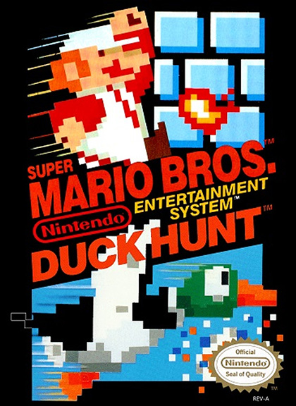
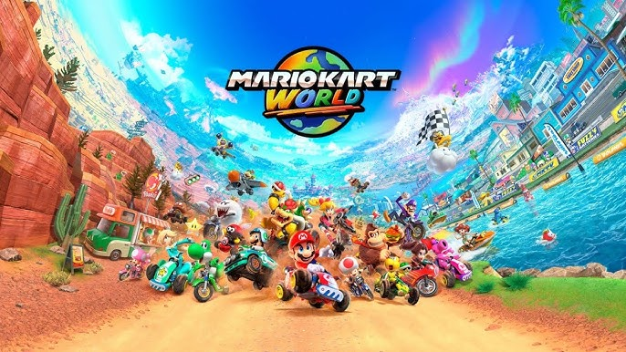

Hey, Video Game Nerdy is Cool Too!
I'm such a video game nerd, it's not even funny! I still remember my dad waiting in line at Toy's R Us to get the original NES console that had the Super Mario Bros./Duck Hunt package and the Zapper gun. Man, were those ever the days!
Growing up, I loved playing games at the arcade. Some of my arcade favorites when I was 10-14 years old were the Street Fighter games (including the Marvel vs. Capcom series), the Mortal Kombat series, X-Men (that big 6-player cabinet was pretty gnarly), The Simpsons 4-player cabinet, and any of the TMNT 4-player games! My piggy bank was always empty when I was younger.
I loved arcade games so much when I was younger, I figured out how to play all of my favorite ones on emulators. Basically emulators are software programs that mimic the hardware of the console (or arcade cabinet) you want to play and you can play those games on your computer if you have the game files. There was even emulators that had a plugin that enabled online play, so you could compete worldwide to exert your Street Fighter dominance!
Now, that I'm older, I have gotten some of my video game nerdiness somewhat under control. But I still like to play Nintendo Switch 2 primarily. I enjoy playing Donkey Kong Bananza with my daughter and exerting my Mario Kart World dominance on friends and family! As a family we like all things Nintendo so much that we've gone quite a few times to Nintendo World at Universal Studios, Hollywood.
It should go without saying that I do not own the images on this page, nor should it be construed that I'm trying to profit off of anything that doesn't belong to me, since the pictures are the property of Nintendo. Since their stuff is pretty sweet, you should definitely give them a click anyways.